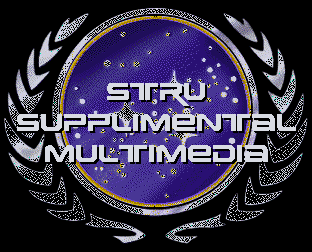

This is the archive for all supplimental graphics, sounds,and various other multimedia resources related to ST:RU. Some ofthe graphics here are very large and may take up to 2 minutes to load dependingon your connection speed. These graphics and sounds are not vitalto game play, however they do create an atmosphere that encourages imaginationand creativity. Often, these graphics are created before a storylineis written and help to inspire the Gamemasters. All works archivedhere are original and where they have been copied, credit is given itsdue.
New Graphics are added from time to time. When you encounter a hyperlink in your email message, either paste it intoyour web browser or refer to this page.
Game 001 "Turnabout is Fair Game"
122K Approx. 1.2 minutes to download on a 14.4 modem
An animation of the sensor logs from the USS Sutherland, observingthe
spatial anomoly in the Romulan Neutral Zone from its position in FederationSpace.
ADML Hanuchek displays this Classified Information at thebriefing aboard
the USS Omega.
130K Approx. 1.2 minutes to download on a 14.4 modem
The PADD presented to LTCMDR Lark for consideration regarding the course
the Omega should plot to the anomoly.
41K Approx. >1 minute to download on a 14.4 modem
The Computer Schematic LT Johnson shows CMDR Kellaen regarding Warp
Field Integrity when subjected to chroniton wave bombardment.
19K Approx.>1 minute to download on a 14.4 modem
The Memory Alpha Archive Bio on ADML Hanuchek CPT Ryan was viewing
in his quarters.
14K Approx >1 minute to download on a 14.4 modem
The Jem'Haddar warship encountered enroute to the anomoly in the Romulan
Neutral Zone.
17K Approx >1 minute to download on a 14.4 modem
Weyoun chats with CPT Ryan over LTCMDR Lark's return.
21K Approx >1 minute to download on a 14.4 modem
The smeared symbol LTCMDR Lark sees atop the box in sickbay.
12K Approx >1 minute to download on a 14.4 modem
The vessel trapped near the accretion disk of the anomoly.
100K Approx 1 minute to download on a 14.4 modem
The padd LT Tohn hands CPT Ryan with the first sensor sweep of the
anomoly.
7K Approx >1 minute to download on a 14.4 modem
The internal view of the empty cargo bay as requested by CMDR Sovak.
48K Approx >1 minute to download on a 14.4 modem
The Dominion Plans for the anomoly found aboard the Romulan scientist's
ship.
48K Approx >1 minute to download on a 14.4 modem
The strategic view of the meeting with the Romulan ships before the anomoly.
{kind=link}
{kind=link}
{kind=link}
{kind=link}
{kind=link}
{kind=link}
{kind=link}
{kind=link}
{kind=link}
{kind=link}
{kind=link}
{kind=link}